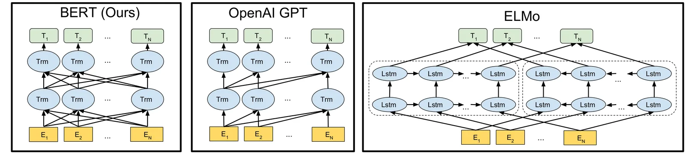
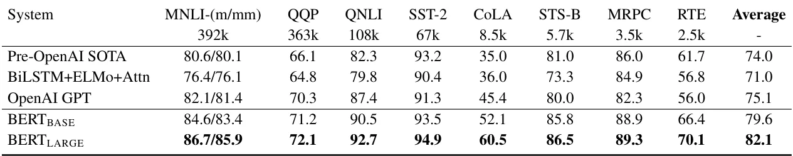

O problema da unidirecionalidade
Antes do BERT, os modelos de linguagem pré-treinados tinham uma limitação fundamental: eles liam texto em uma direção só. O GPT da OpenAI, por exemplo, processava cada palavra olhando apenas para as palavras anteriores, da esquerda para a direita. Isso funcionava razoavelmente bem para gerar texto, mas criava um problema sério para tarefas de compreensão.
A questão é que muitas tarefas de processamento de linguagem natural exigem contexto completo. Em perguntas e respostas, por exemplo, você precisa entender tanto o que vem antes quanto o que vem depois de cada palavra para identificar a resposta correta em um parágrafo. Modelos unidirecionais perdiam metade da informação disponível.
Existiam tentativas de contornar isso. O ELMo treinava dois modelos separados — um lendo da esquerda para direita, outro da direita para esquerda — e depois concatenava as representações. Mas essa concatenação era superficial: os dois modelos nunca realmente conversavam entre si durante o treinamento. O BERT propõe uma solução diferente: treinar um único modelo que olha para ambas as direções simultaneamente, desde o início.
A arquitetura: Transformer bidirecional
O BERT usa a arquitetura Transformer, a mesma apresentada no paper 'Attention is All You Need' de 2017. A diferença crucial está no mecanismo de atenção: enquanto o GPT usa atenção causal (cada token só pode olhar para tokens anteriores), o BERT usa atenção bidirecional completa. Cada token pode atender a todos os outros tokens da sequência, tanto à esquerda quanto à direita.
O paper apresenta dois tamanhos de modelo. O BERT-BASE tem 12 camadas (blocos Transformer), 768 dimensões de hidden state e 12 cabeças de atenção, totalizando 110 milhões de parâmetros. O BERT-LARGE tem 24 camadas, 1024 dimensões e 16 cabeças de atenção, com 340 milhões de parâmetros. O tamanho do BERT-BASE foi escolhido propositalmente para ser comparável ao GPT.
A representação de entrada combina três tipos de embeddings somados: token embeddings (usando WordPiece com vocabulário de 30 mil tokens), segment embeddings (indicando se o token pertence à sentença A ou B) e position embeddings (indicando a posição na sequência). Todo input começa com um token especial [CLS], cujo estado final é usado como representação agregada da sequência inteira para tarefas de classificação.

Masked Language Model: o truque do pré-treino
Aqui está o problema: se você simplesmente deixar o modelo ver todas as palavras ao mesmo tempo durante o treinamento, ele pode trapacear. Em um modelo bidirecional padrão, cada palavra poderia indiretamente 'ver a si mesma' através das camadas, e o modelo trivialmente preveria a palavra alvo sem aprender nada útil sobre linguagem.
A solução do BERT é o Masked Language Model (MLM), inspirado no teste Cloze de 1953. Durante o pré-treino, o modelo mascara aleatoriamente 15% dos tokens de entrada e tenta prever qual era o token original baseando-se apenas no contexto. É como aqueles exercícios de preencher lacunas, mas em escala massiva.
Há um detalhe importante na implementação: dos 15% de tokens selecionados para mascaramento, 80% são de fato substituídos pelo token especial [MASK], 10% são substituídos por um token aleatório qualquer, e 10% permanecem inalterados. Isso evita que o modelo se torne dependente demais do token [MASK], que não aparecerá durante o fine-tuning em tarefas reais.
O segundo objetivo de pré-treino é a predição de próxima sentença (Next Sentence Prediction). O modelo recebe pares de sentenças e precisa prever se a segunda sentença realmente segue a primeira no texto original, ou se foi escolhida aleatoriamente. Isso ensina o modelo a entender relações entre sentenças, crucial para tarefas como inferência de linguagem natural e perguntas e respostas.
Como adaptar o BERT para diferentes tarefas
A elegância do BERT está na simplicidade do fine-tuning. Para classificação de sentenças (como análise de sentimento), você usa o estado final do token [CLS] como representação da sentença inteira e adiciona uma camada linear simples para classificação. Para pares de sentenças (como inferência textual), você empacota as duas sentenças em uma sequência separada por [SEP], e segue o mesmo processo.
Para tarefas de nível de token, como perguntas e respostas, a abordagem é diferente. No SQuAD, por exemplo, o modelo recebe uma pergunta e um parágrafo que contém a resposta. Durante o fine-tuning, são introduzidos apenas dois vetores: um vetor de início S e um vetor de fim E. A probabilidade de cada palavra ser o início da resposta é calculada pelo produto escalar entre a representação da palavra e S, seguido de softmax. O mesmo processo identifica o fim da resposta usando E.

Resultados no benchmark GLUE
O paper testa o BERT em 11 tarefas do benchmark GLUE (General Language Understanding Evaluation), que cobre classificação de sentenças, similaridade semântica, inferência textual e outras tarefas de compreensão. Os datasets variam enormemente em tamanho, de 2.500 exemplos (RTE) até 392 mil (MNLI).
O BERT-BASE obteve 79,6% de acurácia média, superando o GPT (75,1%) e o anterior estado da arte (74,0%). O BERT-LARGE alcançou 82,1%, um aumento de 7 pontos percentuais sobre o melhor resultado anterior. No MNLI, a maior tarefa do GLUE, o BERT-LARGE obteve 86,7% de acurácia, uma melhoria absoluta de 4,6% sobre o GPT.
Um padrão interessante emerge: o BERT-LARGE supera significativamente o BERT-BASE em todas as tarefas, especialmente naquelas com pouquíssimos dados de treino. No CoLA, com apenas 8.500 exemplos, o BERT-LARGE alcança 60,5% contra 52,1% do BERT-BASE. Isso sugere que modelos maiores conseguem transferir conhecimento mais efetivamente de grandes volumes de texto não rotulado para tarefas com poucos exemplos.

Perguntas e respostas: SQuAD
No Stanford Question Answering Dataset (SQuAD v1.1), com 100 mil pares de perguntas e respostas, a tarefa é identificar o trecho exato de um parágrafo da Wikipedia que responde à pergunta. O BERT-LARGE alcançou 93,2 de F1 no conjunto de teste, uma melhoria de 1,5 ponto sobre o melhor sistema anterior.
No SQuAD v2.0, que adiciona perguntas sem resposta no texto (exigindo que o modelo identifique quando não há resposta), o BERT-LARGE obteve 83,1 de F1, uma melhoria de 5,1 pontos. Essa versão é mais difícil porque o modelo precisa não apenas encontrar respostas, mas também reconhecer quando a pergunta não pode ser respondida com base no contexto fornecido.
Detalhes de treinamento e hiperparâmetros
Para o fine-tuning no GLUE, o paper usou batch size de 32 e treinou por 3 épocas. A taxa de aprendizado foi selecionada entre 5e-5, 4e-5, 3e-5 e 2e-5 baseando-se no desempenho no conjunto de desenvolvimento. Um detalhe importante: o fine-tuning do BERT-LARGE era às vezes instável em datasets pequenos, então os autores rodaram múltiplos restarts aleatórios e selecionaram o melhor modelo no conjunto de desenvolvimento.
Essa instabilidade em datasets pequenos é uma limitação prática importante. Ela sugere que, apesar do poder do pré-treino, ainda há desafios em adaptar modelos muito grandes para tarefas com poucos exemplos. A necessidade de múltiplos restarts também aumenta o custo computacional do fine-tuning, embora ainda seja muito menor que treinar um modelo do zero.
Por que a bidirecionalidade importa
A contribuição central do paper é demonstrar empiricamente que pré-treino bidirecional profundo supera abordagens unidirecionais ou concatenações superficiais. Isso contrasta com o GPT, que usa Transformers unidirecionais, e com o ELMo, que treina LSTMs independentes em cada direção e depois concatena as features.
A diferença não é apenas arquitetural, mas fundamental: no BERT, cada camada pode integrar informação de ambas as direções desde o início. No ELMo, as representações esquerda-para-direita e direita-para-esquerda nunca interagem durante o treinamento, apenas são concatenadas no final. Isso limita a capacidade do modelo de aprender interações complexas entre contexto passado e futuro.
O Masked Language Model é o que torna isso possível. Ao mascarar tokens aleatoriamente, o BERT pode treinar um modelo verdadeiramente bidirecional sem permitir que cada palavra veja a si mesma. É uma solução elegante para um problema que parecia exigir escolher entre bidirecionalidade e treinamento válido.
Impacto e limitações
O BERT estabeleceu um novo paradigma em NLP: pré-treinar um modelo de linguagem grande em texto não rotulado, depois fazer fine-tuning para tarefas específicas. Esse paradigma dominou a área nos anos seguintes, levando a modelos como RoBERTa, ALBERT, ELECTRA e eventualmente aos modelos de linguagem ainda maiores como GPT-3 e T5.
Mas há limitações importantes. O paper testa apenas em inglês. O custo computacional do pré-treino, embora não quantificado no paper, é substancial — treinar o BERT-LARGE do zero exige recursos que poucos grupos de pesquisa têm. E o Masked Language Model, embora efetivo, tem uma discrepância entre pré-treino e fine-tuning: o token [MASK] aparece durante o pré-treino mas não durante o uso real.
O paper também não explora profundamente o que o modelo aprende. Trabalhos posteriores mostraram que o BERT captura fenômenos sintáticos e semânticos complexos, mas também pode amplificar vieses presentes nos dados de treino. A análise de interpretabilidade é limitada no paper original.
Ainda assim, o impacto é inegável. O BERT mostrou que representações pré-treinadas bidirecionais profundas superam arquiteturas específicas de tarefas cuidadosamente projetadas. Isso mudou a forma como a comunidade de NLP aborda problemas: menos engenharia de features e arquiteturas, mais foco em pré-treino e transferência de conhecimento.
O que fica
- O BERT usa atenção bidirecional completa, diferente de modelos anteriores que liam texto em uma direção só ou concatenavam modelos independentes superficialmente.
- O Masked Language Model mascara 15% dos tokens e treina o modelo a prevê-los usando contexto completo, permitindo pré-treino bidirecional sem vazamento de informação.
- Um único modelo pré-treinado pode ser ajustado para múltiplas tarefas adicionando apenas uma camada de saída, alcançando estado da arte em 11 benchmarks de NLP.
- BERT-LARGE supera BERT-BASE especialmente em datasets pequenos, sugerindo que modelos maiores transferem conhecimento mais efetivamente de texto não rotulado.
Paper original: BERT: Pre-training of Deep Bidirectional Transformers for Language Understanding
Comentários
Nenhum comentário ainda. Seja o primeiro.